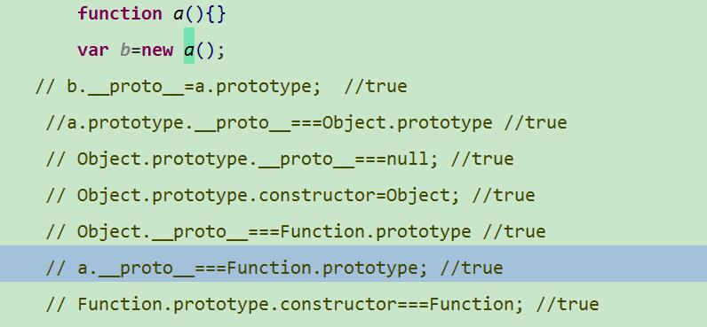
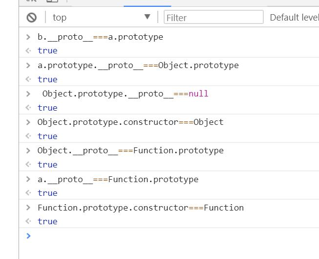

其实javascript中 所有方法都是可以改写的 例如：
Array.prototype.splice = function(a){
alert(a);
}
console.log( [].splice(3) ); //3
这个时候不管这么调用 都弹出 你写的对应值 包括下面这样：
var str = '123';
Array.prototype.splice.call(str,3); //3
下面我们 来理解下 __proto__ prototype constructor 原型链 之间的关系
例如 function a(){}
var b=new a();
这个时候 b的__proto__ 指向的就是a.prototype;
a.prototype的__proto__指向的是Object.prototype;
b的constructor 指向的也是 function a(){};
而 a 它的__proto__ 指向 是 Function.prototype现在 Function.prototype. constructor 指向的是 Function(){};
上面的Function(){} 也有 __proto__ 指向 Function.prototype ;
Function.prototype的constructor指向的也是Function(){};
Function.prototype的__proto__ 同时又指向Object.prototype;
Object.prototype的 constructor 又是 Object;
这个 Object; 的 __proto__ 又 指向的是 Function.prototype;
Object.prototypet的__proto__ 是null
在补充一下 a.constructor指向的是 Function. 这个下面没有展示
如图：

